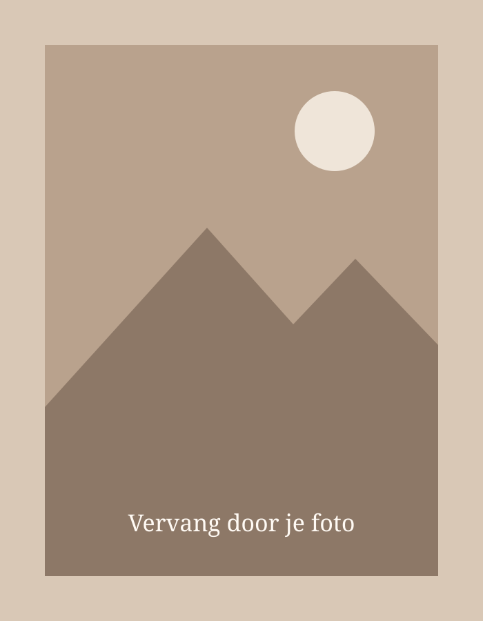

Welkom
Mijn Showcaseportfolio
Ik ben Inka Declerck en studeer Vastgoed aan HOGENT. Op deze website neem ik je graag mee door mijn persoonlijke en professionele ontwikkeling binnen de vastgoedwereld.
Tijdens mijn opleiding krijg ik niet alleen de kans om theoretische kennis op te doen, maar ook om de vastgoedsector buiten de schoolbanken te ontdekken. Door deel te nemen aan verschillende activiteiten, zoals beurzen, bedrijfsbezoeken en architecturale uitstappen, verbreed ik mijn kennis en krijg ik een beter beeld van de verschillende aspecten van vastgoed.
In dit portfolio verzamel ik mijn ervaringen en reflecties over deze activiteiten. Ik vertel wat ik heb bijgeleerd, wat mij is bijgebleven en hoe deze ervaringen bijdragen aan mijn ontwikkeling als toekomstige vastgoedprofessional.
Bekijk mijn activiteiten